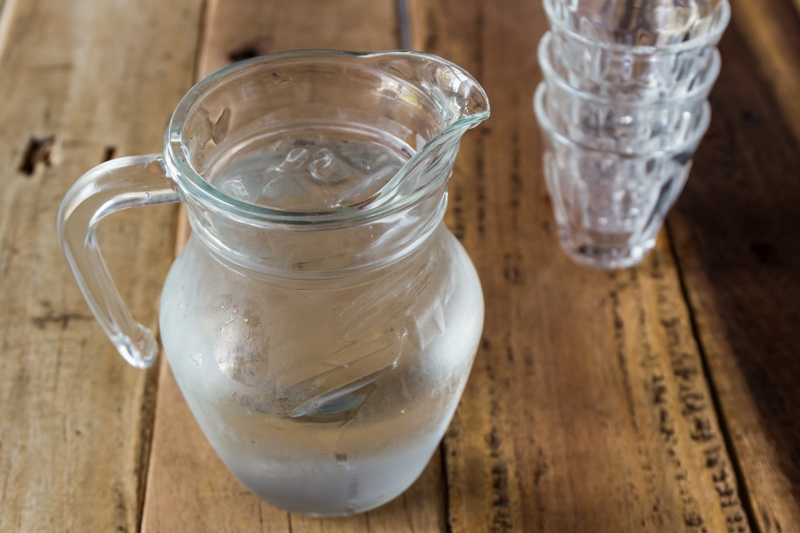

Consuming Dehydrated Foods – Be Aware
Dehydrated foods should be enjoyed in moderation. Why? Because dehydrated foods live between the land of fresh ‘living’ food and the world of cooked food. There is little to no moisture left in dehydrated food which can draw moisture from your body and cause constipation if eaten in large amounts for too long a period. Therefore, you must increase your water intake when consuming dehydrated foods.

Increase Your Water Intake
Water is involved in many essential functions of the body, such as flushing out waste, regulating body temperature, and helping brain function. You need enough water in your system to have a healthy stool and avoid constipation. Your kidneys are important for filtering out waste through urination, and adequate water intake helps your kidneys work more efficiently. I could go on and on about the significance of drinking water, and it’s hard enough these days to make sure we get enough. So when eating dehydrated foods, you really need to make your water intake a priority. I am not sure that I can stress that enough.
Sugar Content Warning
Dried fruits and veggies are concentrated not only in size. They contain more calories, sugars, and carbohydrates than they do if fresh. A half-cup of dried apples, apricots, and raisins all have double the calories and at least twice the carbs compared with the amount in one cup of fresh fruit. So please be mindful as you snack away on your favorite dried fruit.
Reconstituting Dried Fruits & Veggies
Dehydrated foods can be reconstituted with water before consuming. And sometimes it is required when preparing recipes for blending or textural reasons. When reconstituting I recommend soaking anywhere between fifteen minutes to an hour. Anything longer might dilute the flavors too much, and you will have little taste or nutrition. The soak water can often be saved for other recipes. For example, in my recipes, I might use dates that need to be softened. The soak water is slightly sweet as the date sugars leach out, and you can use it as the base of your next smoothie.
I hope that you found this helpful. Blessings, amie sue
© AmieSue.com